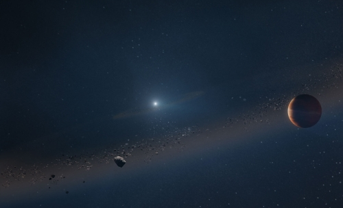

Es uno de los tipos de estrella más pequeños, y relativamente, más fríos del universo, con una masa promedio de menos de la mitad de la masa del sol, pero conforman la mayoría de las estrellas visibles en el universo observable, incluída la Vía Láctea. La mayoría, no son visibles desde la Tierra a simple vista, a pesar de que la estrella más cercana al Sol, Proxima Centauri, sea una enana roja.
Su secuencia principal es similar al resto de tipos de estrellas, pues consiste en quemar lentamente su combustible de hidrógeno. Pero en serio lenta, pues esta etapa puede durar billones de años. A pesar de su pequeño tamaño, masa y poco calor, es el tipo de estrella más longevo en el universo, pues gracias a su pequeño tamaño, no necesita quemar combustible en grandes cantidades, pudiendo prevalecer por mucho tiempo.
Eventualmente, su ciclo de vida llega a su fin, la estrella comienza a enfriarse gradualmente en lugar de expandirse, como el resto de tipos de las estrellas. A diferencia de sus hermanas mayores, las enanas rojas no tienen la masa suficiente para iniciar la fusión del helio, por lo que solo se contraen y continúan enfriándose. Con el paso del tiempo, se convierten en enanas blancas, un tipo de estrella que se apaga lentamente hasta desaparecer.